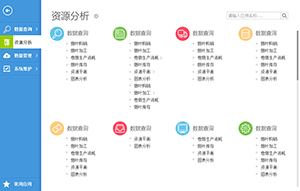
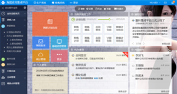
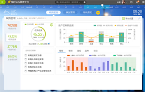
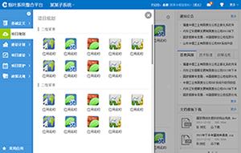
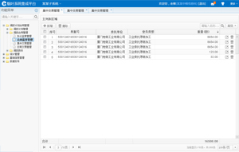

框架界面又分为布局(layout)及皮肤(skin)两大部份，先设置布局，再选择该布局下的皮肤。

系统默认主题，点击菜单从左侧全屏滑出导航菜单，支持多系统切换、支持无限级菜单（其中一级菜单及二级菜单需要提供特定格式的图标）、支持多种皮肤颜色的选择


2015云南省烟叶运行管理平台框架，体现一个平台，四个中心

图标模式主题，点击菜单从左侧全屏滑出导航菜单，支持多系统切换、支持无限级菜单（其中一级菜单及三级菜单需要提供特定格式的图标）、支持多种皮肤颜色的选择

树形菜单模式主题，菜单固定在左侧，并以组织树的形式展现,支持多系统切换、支持无限级菜单、支持多种皮肤颜色的选择